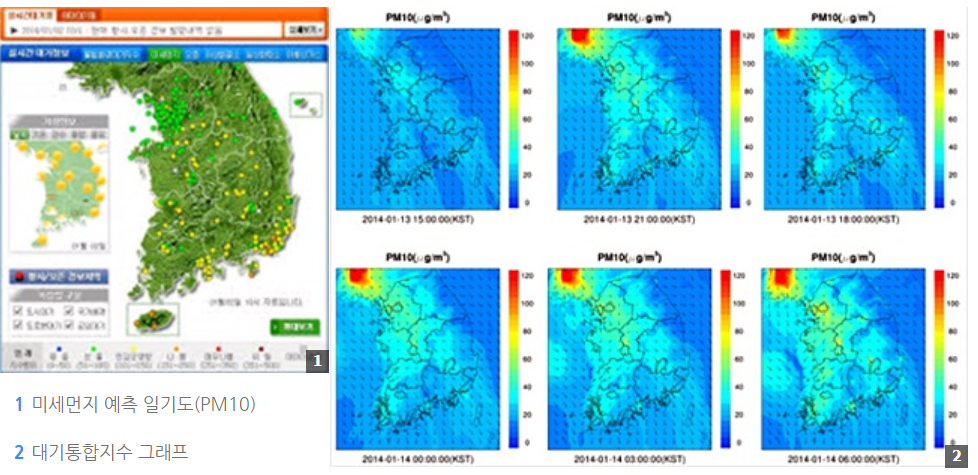

국민 건강을 위협하는 미세먼지
미세먼지란?
미세먼지는 지름이 10㎛(마이크로미터, 1㎛=1000분의 1㎜) 이하의 먼지로 PM(Particulate Matter)10이라고 한다. 자동차 배출가스나 공장 굴뚝 등을 통해 주로 배출되며 중국의 황사나 심한 스모그때 날아오는 크기가 작은 먼지를 말한다. 미세먼지중 입자의 크기가 더 작은 미세먼지를 초미세먼지라 부르며 지름 2.5㎛ 이하의 먼지로서 PM2.5라고 한다. 주로 자동차 배출가스 등을 통해 직접 배출된다. 대기 중으로 배출된 가스 상태의 오염물질이 아주 미세한 초미세먼지 입자로 바뀌기도 하는데 초미세먼지가 미세먼지보다 더 위험한 것은 허파꽈리 등 호흡기의 가장 깊은 곳까지 침투하고, 여기서 혈관으로 들어가기 때문이다. 세계보건기구(WHO)는 미세먼지 중 디젤에서 배출되는 BC(black carbon)을 1급 발암물질로 지정했다. 또한, 장기간 미세먼지에 노출되면 면역력이 급격히 저하되어 감기, 천식, 기관지염 등의 호흡기 질환은 물론 심혈관 질환, 피부질환, 안구질환 등 각종 질병에 노출될 수 있다(PM 2.5 환경기준 설정연구, 국립환경과학원, 2006).
중국은 석탄 의존도가 70%가량(중국통계연보, 2011)이다. 석탄연료 사용이 증가하는 겨울철에 스모그가 자주 발생하게 되며 이것이 서풍 또는 북서풍 계열의 바람을 타고 우리나라로 날아오게 되는데 중국발 스모그는 우리나라에서 배출된 오염물질과 함께 혼합ㆍ축적되어 미세먼지 농도가 높아진다. (스모그는 연기(smoke)와 안개(fog)의 합성어로, 안개와 미세먼지ㆍ황산화물ㆍ질소산화물 등의 대기오염물질이 혼합되어 안개가 낀 것처럼 대기가 뿌옇게 되는 현상을 말한다.) 황사나 스모그 둘 다 미세먼지 농도에 영향을 끼치는데 고농도 발생 시 시정(visibility)을 악화시켜 대기가 뿌옇게 보이고, 호흡기에 악영향을 끼친다. 하지만 황사가 중국 몽골의 건조지대에서 발생한 자연현상인 반면, 고농도의 미세먼지 발생은 자동차ㆍ공장ㆍ가정 등에서 사용하는 화석연료 사용으로 배출된 인위적 오염물질이 주요 원인이 된다. 환경부에서 발표한 자료에 의하면 중국에서 바람을 타고 날아온 황사, 스모그가 우리나라 대기오염에 미치는 영향은 다음과 같다.
* 황산화물 29.7%
* 초미세먼지 32-60%
* 미세먼지 30-50%
* 납 30%
* 카드뮴 50%
* 비소 40%
(미세먼지와 중금속오염도는 황사가 같이 발생했을 때의 비율임)
환경부는 지난 1995년 1월부터 10㎛ 이하의 미세먼지(PM 10)를 새로운 대기오염물질로 규제하고 있으며, 2015년 1월부터 2.5㎛ 이하의 초미세먼지(PM 2.5)에 대한 규제가 시행될 예정이다. 현재 「환경정책기본법 시행령」에 따른 미세먼지의 대기환경 기준은 24시간 평균 100㎍/㎥ 이하이며, 1년간 평균 50㎍/㎥ 이하이다. 2015년부터 시행되는 초미세먼지의 대기환경 기준은 24시간 평균 50㎍/㎥ 이하이며, 1년간 평균 25㎍/㎥ 이하이다.
미세먼지의 예측법
현재 미세먼지에 대한 업무는 국립환경과학원에서 하고 있다. 홈페이지를 들어가보면 가장 먼저 실시간 대기정보가 나오고 통합환경대기지수가 나오며 우리나라에 영향을 주고 있는 미세먼지가 포함하고 있는 오존, 이산화질소, 일산화탄소, 아황산가스의 농도분포도 볼 수 있다. 이곳에서 미세먼지 예측자료로 활용하는 것이 한국대기질예보시스템(PM 10)이다. 예측자료는 다음 그림과 같이 표출된다. 2014년 1월 13일 예측자료를 볼 수가 있다.

그러나 미세먼지 예측은 현재 우리나라의 예측기술로는 상당히 어렵다. 그러다보니 미세먼지가 국민적인 관심사로 ‘떠올랐던 2013년 12월부터 2014년 1월까지 미세먼지 예측기관인 국립환경과학원은 언론에 뭇매를 맞았다.
먼저 미세먼지 예보가 틀렸던 사례를 살펴보자. 2013년 12월 5일의 경우다. 환경과학원에서 미세먼지 농도가 높겠으나 오후가 되면서 수도권 미세먼지 농도가 줄어들 것으로 전망하였다. 예보와 달리 서울에 사상 처음으로 초미세먼지 주의보가 내려졌다. 서울 영등포구는 평상시 먼지의 5배에 달했고 수도권 곳곳에서도 200마이크로그램 가까이 치솟은 곳이 많았다. 이에 대해 국립환경과학원은 오염물질의 체류시간을 잘못 계산했다고 해명하였다. 그런데 그 다음날의 예측도 빗나갔다. 이날은 미세먼지 농도가 높을 것으로 예상했으나 오히려 정상 수준이었다. YTN은 12월 6일 “미세먼지 예보, 연일 빗나가고 있습니다. 오늘 미세먼지가 많을 것으로 예상했는데, 파란 하늘이 드러났는데요. 뒷북도 아닌, 매일 '거꾸로' 예보를 하고 있는 셈입니다.” 라고 보도했다.

2013년 12월 20일 예보도 크게 빗나갔다. SBS에서 2013년 12월 20일 “환경부 예보는 이번에도 크게 빗나갔습니다. 당초 서울을 비롯한 중부 지역 모두 야외활동에 무리가 없는 수준이 될 걸로 예보했으나, 중부지방의 미세먼지 농도가 평소의 세 배 안팎까지 올라갔습니다.”면서 미세먼지 예측이 수준 이하라고 질타했다.
중국발 스모그로 인한 미세먼지 예측뿐 아니라 황사로 인한 미세먼지 예측도 엉망이었다. 중앙일보는 2014년 1월 2일 기사에서 “1일 새벽 황사가 서해안과 일부 내륙지역을 덮쳤다. 특히 서울에 새해 첫날 황사가 온 건 이번이 처음이다. 그러나 기상청과 환경부 모두 황사예보를 놓치는 바람에 해맞이 등을 위해 야외로 나온 시민들이 적잖은 불편을 겪었다. 시민들이 해돋이를 구경하던 이날 오전 7~8시 서울의 미세먼지(PM10) 농도는 24시간 환경기준인 ㎥당 100㎍(마이크로그램·1㎍=100만 분의 1g)이 넘었다. 오전 2시 서울 관악구에서 189㎍까지 치솟았던 미세먼지는 오전 9시를 고비로 낮아졌지만 이날 오전 서울의 평균 오염도는 122㎍으로 미세먼지 예보단계 중 ‘나쁨(121~200㎍/㎥)’에 해당했다.”며 전혀 미세먼지 농도 예측을 하지 못한 것에 일침을 가했다.
왜 미세먼지가 영향을 주었던 날마다 예측을 해주지 못하는 것일까? 국립환경과학원은 바람 예측하는 것이 현재 기술로 어려우며 다양한 기상자료를 활용해 예측정확도를 높이겠다고 해명하고 있다. 현재 우리나라 미세먼지 예측기술은 상당히 낮다. 우선 전문적인 미세먼지 예보관이 없다. 둘째, 예측모델의 정확도가 낮다. 셋째, 중국의 스모그에 대한 실시간 정보를 활용하지 않는다. 넷째, 기상청과 환경부의 미세먼지 관측자료도 공유되지 않았다. 기상청의 슈퍼컴퓨터를 활용한 미세먼지 예측을 하지 않는다. 그러다보니 처리시간이나 자료의 양이 적기에 정확도가 떨어지는 것이다.
미세먼지가 건강에 주는 영향
미세먼지가 국민 건강에 주는 영향에는 어떤 것이 있을까? 한국환경정책·평가연구원(KEI)은 2013 초 내놓은 ‘초미세먼지의 건강영향 평가 및 관리정책연구’ 보고서를 통해 서울 지역에서 미세먼지 일평균농도가 10㎍/㎥ 증가하면 사망발생위험이 0.44% 증가하고, 초미세먼지 농도가 10㎍/㎥ 증가하면 사망발생위험이 0.95% 증가한다고 밝혔다. KEI 배현주 박사는 “하루 단위로 초미세먼지 오염도가 증가해도 사망률에 영향을 미치는 것으로 나타났다”고 말한다.
이화여대 병원이 임신부 1천500명을 4년에 결쳐 추적 조사한 결과 미세먼지 농도가 ㎥당 10㎍ 상승할 경우, 기형아를 출산할 확률이 최대 16%나 높아지는 것으로 나타났다. 또 저체중아 출산율과 조산·사산율도 각각 7%와 8%씩 증가했다. 미국 남캘리포니아 대학이 12개 지역의 아동 1천 700명을 조사한 결과, 미세먼지 농도가 높은 지역에서 태어난 아이들은 폐활량이 떨어지는 '폐 기능 장애'를 겪을 가능성이 다른 지역 아동보다 5배가량 큰 것으로 나타났다.

2013년 8월 영국의 의학전문지 ‘랜싯(Lancet)’에 실린 덴마크 암학회 연구센터의 라쇼우-니엘센 박사팀의 연구논문에서 미세먼지는 폐암에 영향을 주는 것으로 나타났다. 유럽 9개국 30만명의 건강자료와 2095건의 암환자를 대상으로 분석한 이 연구에서 초미세먼지 농도가 5㎍/㎥ 상승할 때마다 폐암 발생 위험은 18% 증가했다. 또 일반 미세먼지가 10㎍/㎥ 상승할 때마다 폐암 발생 위험은 22% 증가하는 것으로 나타났다. 네덜란드 위트레흐트대학의 롭 비렌 박사팀은 랜싯에 발표한 논문을 통해 ‘초미세먼지’ 농도가 5㎍/㎥ 증가할 때마다 조기사망 확률이 7%씩 커졌다고 발표했다.
고려대 이종태(환경보건학) 교수는 “서울 지역 노인들을 대상으로 조사한 결과, 미세먼지가 증가할수록 폐기능이 저하됐다”고 말했다. 노인들의 경우 최대로 내뿜을 수 있는 호흡의 양을 1분 기준으로 환산하면 보통 300L 정도 되는데, 미세먼지가 10㎍/㎥ 증가하면 3.56L 줄고, 초미세먼지가 10㎍/㎥ 증가하면 4.73L 줄어들었다는 것이다. 미세먼지 속의 황산염과 질산염 같은 독성물질이 눈물 층과 화학반응을 해 염증을 일으킨다. 이것은 소량이라도 매우 해로운 것으로 없던 안구건조증을 만들어 낼 수 있다. 안구 건조증 환자가 2007년 143만 명에서 2011년 219만명으로 연평균 11.4%씩 증가하였고, 미국 연구에서도 스모그가 발생할 때 안구건조증 발병률이 최고 40% 급증하는 것으로 나타났다.
외국의 한 연구에서는 미세먼지가 치매와 관련이 있을 수 있다는 결과가 나왔다. 미세먼지 농도가 높은 곳에 사는 사람일수록 뇌 인지 기능 퇴화 속도가 빠르게 나타났다는 것이다. 김기업 순천향대학병원 호흡기알레르기내과 교수는 초미세먼지가 혈관을 타고 들어가서 뇌에서는 치매, 심장에서는 동맥경화증을 유발할 수 있다고 말한다.
미세먼지 예방및 대처법
환경부는 미세먼지 농도를 6단계로 나누어 미세먼지 예보 등급에 따른 행동요령을 만들었다.
* 좋음 : 0~30㎍/㎥
* 보통 : 31~80㎍/㎥
* 약간 나쁨 : 81~120㎍/㎥ - 노약자들의 장시간 실외 활동 가급적 자제
* 나쁨 : 121~200㎍/㎥ - 무리한 실외 활동 자제 요청((특히 호흡기, 심질환자, 노약자)
장시간 무리한 실외 활동 자제
* 매우 나쁨 : 201~300㎍/㎥ - 실외 활동 제한, 실외 활동 자제
* 위험 : 301㎍/㎥ ~ - 실내 활동으로 제한
미세먼지에 대한 예방법을 소개해 본다. 첫째, 가장 중요한 것은 미세먼지 상태가 나쁜 것으로 예측될 때는 미세먼지 행동요령 정도에 따라 행동하는 것이 좋다. 약간 나쁨 단계부터는 노약자나 심혈관질환자, 호흡기 질환자들이 직접 영향을 받는다. 야외활동을 자제하는 것이 좋다고 하지만 가장 좋은 방법은 외출하지 않는 것이다. 둘째, 미세먼지 농도가 높을 것으로 예측되면 집안의 문을 닫아 미세먼지의 유입을 차단한다. 집 실내에서는 충분한 습기유지와 함께 공기청정기 등을 켜주는 것이 좋다. 셋째, 외출할때는 황사방지용 마스크를 착용하는 것이다. 식약청으로부터 허가받은 황사방지용 마스크는 미세입자를 걸러내는 성능을 가지고 있다. 호흡기질환 예방을 위해 황사방지용 마스크를 착용하는 것이 좋다. 문제는 황사방지용 마스크는 세탁하면 모양이 변형되어 기능을 유지할 수 없다. 오히려 먼지나 세균에 오염될 수 있으므로 세탁 후 재사용 하지 말아야 한다. 일부 사람들은 수건이나 휴지 등을 덧댄 후 마스크를 사용하는 경우가 있다. 그러나 이것은 밀착력 감소로 미세먼지 차단효과가 떨어질 수 있다. 아울러 긴 소매와 장갑, 목도리등을 꼭 착용하는 것이 좋다. 넷째, 미세먼지가 많은 경우 콘텍트 렌즈를 사용하는 사람은 주의를 해야 한다. 렌즈로 인해 눈이 보다 건조해지면서 충혈, 가려움증 등의 부작용이 발생할 수 있다. 8시간 이상의 장시간 착용을 피해야 한다. 다섯째, 물은 자주 마셔주는 것이 매우 좋다. 그리고 포장되지 않은 과일이나 채소는 2분간 물에 담근 후 흐르는 물에 30초간 씻어 먹는다. 노상이나 야외 조리음식은 미세먼지로 인해 오염가능성이 높다. 가급적 어린이들이 사먹지 않도록 알려주는 것이 바람직하다.
미세먼지 정책
환경부는 2011년 이후 서울을 비롯한 전국 측정소 11곳의 초미세먼지를 측정·분석했다. 결과는 충격적이었다. 2011년 서울의 연평균 초미세먼지 농도는 25.2㎍/㎥로 미국 뉴욕 13.9㎍/㎥의 배에 가까웠다. 미국 로스앤젤레스(17.9㎍/㎥), 영국 런던(16.0㎍/㎥), 프랑스 파리(15.0㎍/㎥) 등 다른 도시에 비해서도 훨씬 높았다. 서울의 초미세먼지 농도는 2010년 28.8㎍/㎥, 2011년 29.3㎍/㎥에 비해 다소 낮아졌다. 그러나 2015년 도입할 대기환경기준인 연간 평균 25㎍/㎥를 여전히 웃돌았다. 서울뿐만 아니라 전국 측정소 11곳 가운데 6곳에서 지난해 기준치 이상의 초미세먼지가 측정됐다. 경기도는 연간 평균 초미세먼지 농도가 32㎍/㎥로 전국에서 가장 높았다. 인천(29.4㎍/㎥)과 춘천(27.8㎍/㎥)도 기준치를 초과했다. 환경부는 이산화황(SO2)과 이산화질소(NO2)가 초미세먼지 농도 상승에 큰 영향을 주는 것으로 파악했다. 한국과 중국, 일본의 공동 연구 결과 우리나라 대기 중 황산화물의 약 30%, 질소산화물의 40% 정도가 중국 등 다른 나라에서 이동해 온 것으로 추정됐다. 황석태 환경부 기후대기정책과장은 “자체 오염원이 적은 백령도에서도 최근 2년간 일평균 기준치를 넘은 날이 25일이나 된 점으로 미뤄 중국의 오염물질이 편서풍을 타고 유입된 탓이 크다”면서 “거기에다 국내에서 발생하는 오염 물질이 함께 상승 작용을 일으키고 있다”고 분석했다.
그런데 중국은 이런 사실에 대해 부인하고 있다. 2013년 12월 6일 동아일보는 “중국 관영 런민(人民)일보의 자매지인 환추(環球)시보는 “한국과 일본이 ‘중국에 스모그 침입을 당했다’면서 중국발 스모그를 자극적으로 보도하고 있다”고 비판했다. 신화통신은 “서울에 나타난 스모그의 발생 원인은 인구 밀도가 높고 대량의 디젤자동차, 분진 등 때문”이라며 중국과는 무관한 일이라는 취지로 보도했다는 것이다. 2013년 말부터 한국을 덮친 스모그는 정말 중국과 관련이 없을까? 전문가들은 “중국 언론의 주장은 논쟁의 대상조차 될 수 없다”고 반박한다. 정용승 고려대기환경연구소장은 “인공위성을 통해 한국을 지나는 기류가 중국에서부터 불어오는 것이 보이는데 아무 상관이 없다니 이해할 수 없다”며 “서풍 또는 남서풍 계열의 기류가 지속적으로 하루 이상 불 때 중국 대륙에서 발생한 대기오염물질이 한국을 뒤덮는 것은 매해 반복되는 현상”이라고 말했다.“고 보도했다.
일부 사람들은 중국발 대기오염 물질로 피해가 크므로 중국을 상대로 손해배상 청구를 해야 한다고 주장한다. 그러나 현실적으로는 대단히 어려운 일이다. 유럽 국가들은 '장거리 대기오염 물질 이동에 관한 협약(CLRTAP)'을 맺어 국경 간 오염물질이 확산될 때 함께 모니터링을 한다. 주범국엔 손해배상 청구까지도 가능하다. 그러나 동북아시아에는 구속력 있는 협약이 없기 때문이다.
국립환경과학원은 최근 발표된 유엔 기후변화정부간위원회(IPCC) 5차 보고서를 토대로 중국의 미래 대기오염물질 배출 규모를 전망했다. 중국 정부가 당장 대기오염 감축에 들어가는 ‘최선의 시나리오’일 경우 PM2.5 배출량은 계속 증가하다 2022년을 정점으로 점차 감소하는 것으로 나타났다. 현재 상황이 계속 유지되는 ‘최악의 시나리오’에선 PM2.5 배출량이 2050년까지 증가하고 2055년쯤부터 줄어드는 것으로 예측됐다. 환경과학원 관계자는 중국발 초미세먼지는 앞으로도 지속적으로 우리나라에 악영향을 줄 가능성이 크다고 전망하고 있다. 중국 정부는 고강도 대기오염 방지책을 발표하며 개선에 나섰지만 별다른 효과를 보지 못하는 것으로 알려졌다. 중국의 경제발전 속도로 볼 때 우리나라의 미세먼지 피해는 갈수록 심해질 전망이다.
이에 대해 미세먼지 주무 부서인 환경부는 다양한 대책을 수립하여 시행할 계획이다. 환경부는 2015~2024년 사이 10년 동안 4조5000억원을 투자해 서울 등 수도권지역의 미세먼지 연평균 오염도를 ㎥당 47㎍에서 30㎍으로, 초미세먼지(PM2.5) 오염도는 27㎍에서 20㎍으로 낮추기로 했다. 환경부는 이를 위해 버스·대형 화물차에 미세먼지와 질소산화물(NOx) 저감장치를 부착하고 숯가마와 직화구이 음식점 등에 대해 오염방지시설 설치를 지원키로 했다. 윤성규 환경부 장관은 기자 간담회에서 “중국이 대기오염 물질을 감소시키기 위해 노력하고 있지만, 개선되는 데 20년은 걸릴 것으로 본다”면서 “우리가 살아남기 위해 국내 오염량을 줄여야 한다”고 말했다. 정부는 미세먼지의 원인이 되는 황산화물·질소산화물의 배출 허용 기준을 2015년부터 20∼25% 강화하고 휘발유차의 미세먼지 배출 허용 기준도 신설키로 했다. 또 2014년까지 CNG(천연가스) 버스 1560대, 전기차 800대 등 친환경차 보급을 확대하고 오염물질을 다량 배출하는 낡은 차량을 내년까지 2만5000대 조기 폐차하기로 했다.
미세먼지 예보는 2013년 12월 16일부터 오염도와 상관없이 매일 발표하고, 2014년 2월부터는 발표횟수도 하루 두 차례로 늘렸다. 일반 국민은 대기정보 제공 사이트인 에어코리아(www.airkorea.or.kr)에 신청하면 미세먼지 예보 내용을 휴대전화 문자서비스로 받아볼 수 있게 됐다. 아울러 환경부는 2014년 5월 수도권, 2014년 8월 전국 등 단계적으로 실시하기로 했던 초미세먼지(PM2.5·지름이 미세먼지의 4분의 1 이하) 예보를 2014년 5월 동시에 시작하기로 했다. 그리고 환경부와 기상청, 환경과학원은 예보 정확도를 높이기 위해 12명으로 구성된 예보전담팀을 만들었다. 환경부는 환경과학원의 미세먼지 예측시스템에 기상청의 분석자료까지 적용하는 ‘앙상블 모델’을 개발하기로 했다. 이를 위해 고성능 컴퓨터를 추가로 도입하기로 하였다. 또한 환경부는 제2차 수도권대기질개선특별대책(2015~2024년)을 수립해 미세먼지 오염을 적극적으로 줄여 나가기로 했다.

미세먼지의 오염을 줄여나가기 위해서는 좋든 싫든 중국과의 협조가 절대적이다. 기상변화에 따른 잦은 안개와 중국발 스모그가 겹칠 경우 환경재앙은 물론 제2의 도심 아파트 헬기 충돌 같은 항공사고 위험도 증가하기 때문이다. 정부는 이런 사태에 대비하기 위해 한·중·일 3국의 대기 분야 상시 ‘정책 대화’를 제의하고, 우리의 앞선 환경산업·기술을 전수하는 등 중국의 대기 질 개선을 지원키로 했다. 정부는 2013년 8월 한·중·일 국장급 환경정책 대화를 가동하자고 중국에 제안했다. 환경부는 또 석탄화력발전소 탈황·탈질 기술, 압축천연가스(CNG) 버스 등 청정 대중교통시설 운영 방안, 경유차 매연 저감 기술 등 중국이 관심을 갖는 국내 환경기술에 대한 파트너십도 제안할 예정이라고 한다. 모쪼록 정부는 국민의 건강에 영향을 주는 미세먼지에 대한 실질적인 정책을 지속적으로 펼쳐나가야 하겠다.